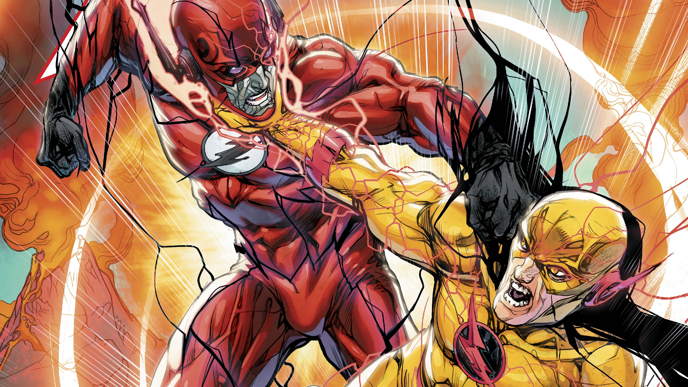

A Origem do The Flash
Barry Allen , mais conhecido como The Flash, é um dos super-heróis mais emblemáticos do
Universo DC. Sua
história começa como a de um simples cientista forense. Barry estava trabalhando tarde em
seu
laboratório
quando um raio atingiu uma prateleira repleta de produtos químicos. Esse acidente extraordinário o
banhou em
uma mistura de substâncias químicas desconhecidas e o atingiu com um raio ⚡ de energia.
Esse evento
trágico e
extraordinário não apenas o deixou ileso, mas também lhe concedeu poderes sobre-humanos. Barry
ganhou a
habilidade de correr a velocidades incríveis e controlar a energia cinética, tornando-se o
lendário
Flash.
Assim, sua jornada como um dos mais rápidos heróis do mundo começou.
Vilão - Flash Reverso
Todo grande super-herói precisa de um arqui-inimigo, e para o Flash, esse vilão é o Flash Reverso
, também
conhecido como Eobard Thawne . Thawne é um velocista do futuro que nutre uma obsessão
doentia
por Barry
Allen . Ele utiliza seus poderes para viajar no tempo e causar estragos na vida de Barry,
tornando-se um
antagonista formidável para o herói. A rivalidade entre o Flash e o Flash Reverso é uma
das
mais icônicas do
mundo dos quadrinhos.

Aventuras do Flash
As aventuras do Flash são tão emocionantes quanto sua velocidade. Ele desempenhou papéis
cruciais em
histórias famosas dos quadrinhos, como "Crise nas Infinitas Terras" ou "Ponto de
Ignição" . Além disso, o
Flash é conhecido por sua participação em equipes de super-heróis, como a Liga da
Justiça,
onde sua
personalidade carismática e senso de humor o tornam um membro valioso enquanto combate o crime.
O Legado do Flash
O impacto do Flash no mundo dos super-heróis e na cultura popular é indiscutível. Este
personagem inspirou
gerações de leitores de quadrinhos e alcançou sucesso na série de TV. Além disso, o Flash
é
um herói com um
legado duradouro, com outros personagens como Wally West e Jay Garrick assumindo o manto do Flash
ao longo
dos anos. Isso demonstra como o legado do Flash perdura e continua a influenciar o mundo
dos
super-heróis.